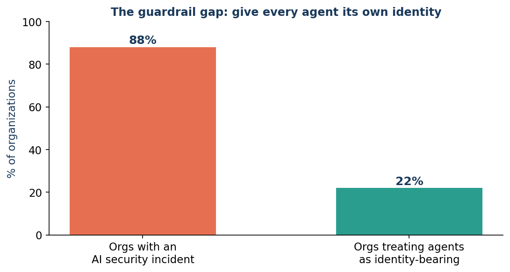
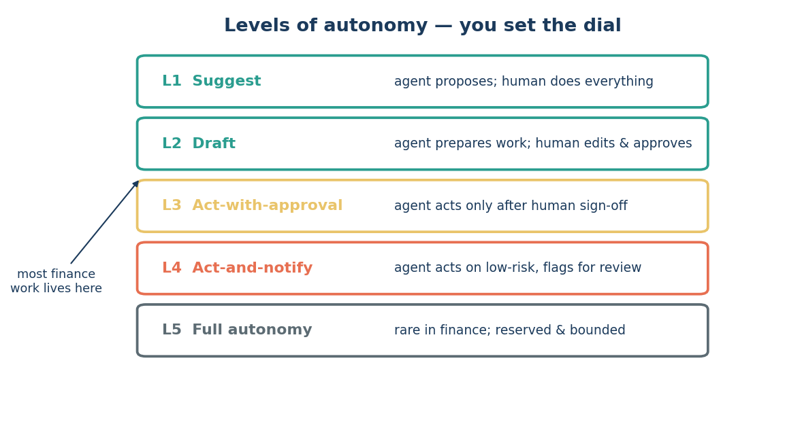

Issue 7 — Human-in-the-loop: accountability without losing control
Edisi 7 — Human-in-the-loop: akuntabilitas tanpa kehilangan kendali
Start with the person on the hook: a reviewer who asks, reasonably, "if the agent acts, who's accountable?" The answer is a design, and the design has numbers behind it.
Mulai dari orang yang paling terbebani: reviewer yang bertanya, secara wajar, "kalau agent yang bertindak, siapa yang tanggung jawab?" Jawabannya ada di desain sistemnya, dan desain itu punya angka di baliknya.
The headline risk statistic is stark: roughly 88% of organizations have experienced an AI-related security incident, while only about 22% treat their agents as identity-bearing with proper access controls (Figure 7.2; accelirate.com, 2026). That gap — powerful agents without their own identities — is the single biggest, most fixable source of agent risk. An agent on a shared login is untraceable; an agent with scoped credentials is fully attributable.
Statistik risiko utamanya cukup mengejutkan: sekitar 88% organisasi pernah mengalami insiden keamanan terkait AI, sementara cuma sekitar 22% yang memperlakukan agent-nya sebagai identity-bearing dengan kontrol akses yang layak (Gambar 7.2; accelirate.com, 2026). Celah itu — agent yang kuat tapi tanpa identitas sendiri — adalah sumber risiko agent terbesar sekaligus paling gampang diperbaiki. Agent di login bareng-bareng nggak bisa dilacak; agent dengan kredensial scoped bisa dipertanggungjawabkan sepenuhnya.

Accountability is engineered through two controls. First, autonomy levels (Figure 7.1): every agent is deployed at a defined level from suggest-only to act-after-approval, with unattended autonomy reserved for narrow, low-risk tasks. The level is a governance decision, set per workflow and auditable. Second, the human-in-the-loop gate: for consequential actions, a named person approves before execution and is accountable for the outcome — the agent is a preparer, not a decision-maker.
Akuntabilitas ini dibangun lewat dua kontrol. Pertama, level otonomi (Gambar 7.1): tiap agent dijalankan di level tertentu, dari suggest-only sampai act-after-approval, dengan otonomi tanpa pengawasan dibatasi untuk tugas sempit dan berisiko rendah. Level ini keputusan governance, diatur per alur kerja dan bisa diaudit. Kedua, gerbang human-in-the-loop: untuk tindakan yang konsekuensinya besar, ada satu orang yang ditunjuk buat menyetujui sebelum dieksekusi dan bertanggung jawab atas hasilnya — agent-nya cuma penyiap, bukan pengambil keputusan.

For leadership weighing scale-up, this reframes the risk question productively. The exposure is not "agents are inherently uncontrollable." It's "agents deployed without identity, level-setting, and review are uncontrollable." Each of those is a checklist item, not a leap of faith. Insisting on all three moves an organization from the exposed 88% toward the governed 22%.
Buat leadership yang mempertimbangkan scale-up, ini bikin pertanyaan risikonya jadi lebih produktif. Eksposurnya bukan "agent pada dasarnya nggak bisa dikontrol." Tapi "agent yang dijalankan tanpa identitas, penetapan level, dan review-lah yang nggak bisa dikontrol." Masing-masing itu item checklist, bukan lompatan keyakinan buta. Dengan memastikan ketiganya, organisasi bergerak dari yang rentan (88%) menuju yang ter-governance (22%).
The ROI framing: strong governance is not a tax on adoption — it's what makes adoption defensible enough to scale. Teams that wire in identity and review from the start avoid the incidents, audit findings, and trust-erosion that stall the exposed majority. Control is the enabler, not the brake.
Dari sisi ROI: governance yang kuat bukan beban buat adopsi — justru itu yang bikin adopsinya cukup meyakinkan untuk di-scale. Tim yang menanamkan identitas dan review sejak awal terhindar dari insiden, temuan audit, dan erosi kepercayaan yang bikin mayoritas yang rentan itu mandek. Kontrol itu pendorong, bukan rem.
The bottom line to forward: assign every agent its own identity, set an explicit autonomy level per workflow, and keep a human accountable at the gate. Do those three, and "who's responsible?" has a clean, auditable answer — a named human, every time.
Intinya buat diteruskan: beri tiap agent identitasnya sendiri, tetapkan level otonomi yang jelas per alur kerja, dan pastikan ada manusia yang bertanggung jawab di gerbang. Lakukan tiga hal itu, dan "siapa yang tanggung jawab?" punya jawaban yang jelas dan bisa diaudit — satu orang yang jelas namanya, setiap saat.
Sources
Sumber
- accelirate.com — ~88% of orgs had an AI-related security incident; ~22% treat agents as identity-bearing.
- accelirate.com — ~88% organisasi pernah kena insiden keamanan terkait AI; ~22% memperlakukan agent sebagai identity-bearing.